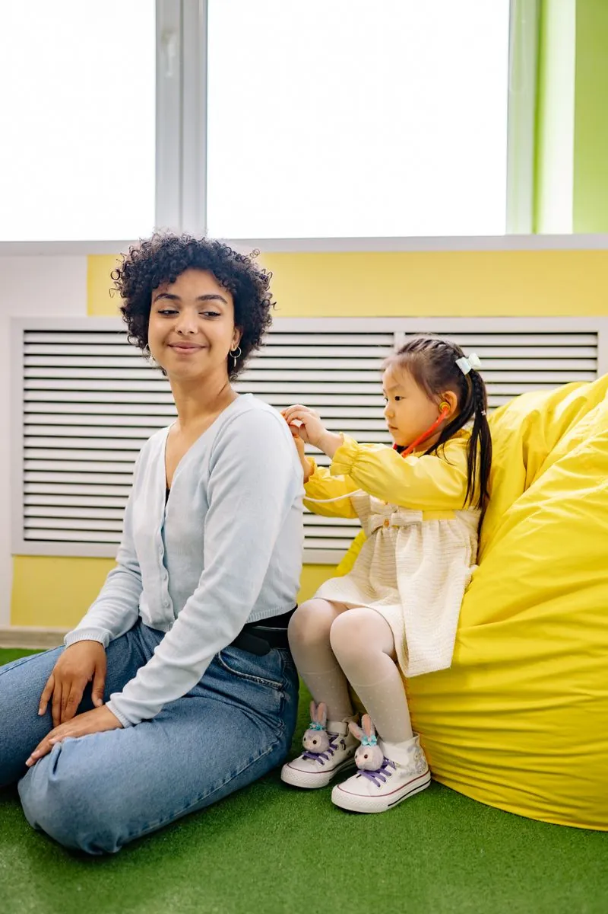
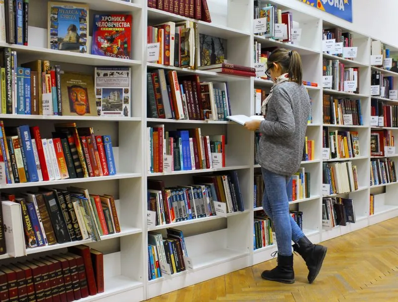
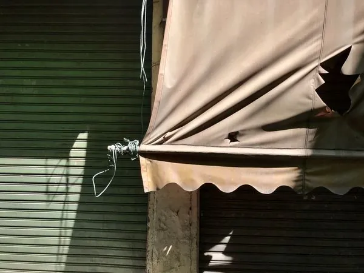

Mengenal Lebih Dekat
Sedaya Bintang
Sekolah terpadu untuk KB, TK, dan SD.
Sambutan Kepala Sekolah

[PERLU DATA: nama kepala KB-TK]
Kepala KB dan TK
[PERLU DATA: kutipan singkat kepala KB-TK]
[PERLU DATA: isi sambutan kepala KB-TK, 1–2 kalimat]
Bagian dari Summarecon dan Pahoa
Didirikan Summarecon, berafiliasi dengan Sekolah Terpadu Pahoa.
Bagian dari PT Summarecon Agung Tbk
Sedaya Bintang adalah sekolah terpadu yang didirikan oleh Summarecon Agung, menekankan Budi Pekerti sebagai dasar pengembangan keterampilan dan pengetahuan murid.
Lihat Kampus BandungBerafiliasi dengan Sekolah Terpadu Pahoa
Sekolah Terpadu Sedaya Bintang berafiliasi dengan Sekolah Terpadu Pahoa dalam filosofi pendidikan, kurikulum, serta standar mutu pengajaran guru.
Mulai Pendaftaran
Budi Pekerti, Trilingual, STEAM
Ketiganya berdiri di atas ACT: Attitude, Communication, Thinking.
Fasilitas Sekolah
Fasilitas sekolah dirancang untuk mendukung proses belajar murid.

Spacelab
Ruang eksplorasi sains

Roof Garden
Taman observasi alam

Playground
Area bermain anak

Klinik UKS
Didampingi perawat medis
Ketentuan Biaya Pendidikan
Uang Pangkal yang dibayarkan mencakup kelanjutan masa studi murid hingga akhir jenjang yang bersangkutan.


Penerimaan Murid Baru
Membentuk murid yang berbudi pekerti, cerdas, dan mampu berpikir kritis.